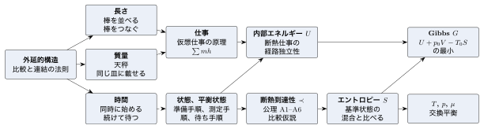

1 概要
温度、熱、エントロピー、自由エネルギーを原始概念とせず、実験の手順とその結果だけから熱力学を組み立てる。 中心は Lieb–Yngvason による断熱到達性の公理化である [ 1 , 2 , 3 ] 。 断熱到達性から出発する考え方は Carathéodory [ 5 ] にさかのぼり、Buchdahl [ 7 ] と Giles [ 6 ] が発展させた。 非平衡状態への拡張は [ 4 ] にある。 準備手順、変換、測定手順を原始概念とする操作的理論 [ 22 , 23 ] は、測定手順への依存を明示する点で、この構成の比較対象になる。 操作主義の立場は Bridgman [ 19 ] による。 各段階で、定義と、実験に基づいて新しく置く仮定を区別する。 この blueprint のすべての定義と定理は Lean 4 [ 24 ] と Mathlib [ 25 ] で形式化済みであり、sorry や追加の公理は使っていない。
依存関係は次の順に進む。 長さの目盛り、状態と平衡状態、時間の目盛り、仕事の力学的な基礎、断熱仕事による内部エネルギー、断熱操作から定めた断熱到達性、相殺則、エントロピー原理、交換平衡による温度と圧力、Gibbs 自由エネルギーの最小原理 (図 1.1)。

測定から抽象的な量に移る段階では、物理的に非自明な仮定が入り込みやすい。 例えば、二つの目盛りが同じ量を測っていることは、同じ数学的構造を持つことからは出ない。 この blueprint では、そうした主張を定理の仮定として取り出す。 本文では、名前をつけるだけの「定義」(青の枠) と、実験で確かめる主張である「経験則」(緑の枠) を分けて書く。 定義は正しいか誤りかを問えず、経験則は実験で反証されうる。 Lean では、経験則は構造のフィールドか定理の仮定として現れる。 主な例は次のとおり。
二つの目盛りが同じ量を測ることは、比例関係 \(\mathrm{Compatible}\) として明示する (定義 7)。
平衡が状態の性質であるためには、状態が以後の変化を決めるという仮定が要る (経験則 14)。
仕事の計算には、力学の法則を満たす重みづけだけを使う。その範囲では、第一法則は重みづけの選び方によらない (定理 51)。
残っている仮定は最後の章にまとめる。
1.1 用語
本文では次の用語を、この意味だけで使う。
- 手順
実験室で実行できる具体的な手続き。準備手順、測定手順、待ち手順、比較、連結はどれも手順である。
- 準備手順
物質を用意する手順。例えば、容器に物質を入れてピストンを固定する。記号 \(\mathrm{Prep}\)。
- 測定手順
巨視的な量を読む手順。例えば、体積の目盛りを読む。記号 \(\mathrm{Meas}\)。
- 読み
準備手順の直後に測定手順を行って得る実数。
- 待ち手順
基準となる過程 (砂時計、振り子など) が終わるまで何もしない手順。記号 \(\mathrm{Dur}\)。準備手順 \(p\) に待ち手順 \(d\) を続けたものを \(\mathrm{wait}_d\, p\) と書く。
- 状態
どの測定手順でも読みが一致する準備手順の類。
- 定常
準備手順の性質。どの待ち手順を続けても、どの読みも変わらないこと。
- 平衡状態
定常な準備手順で作られる状態。その集合を \(\Gamma \) と書く。
- 比較、連結
棒、重り、待ち手順に対する二つの手順。比較は大小を、連結は和を与える。
- 定義
名前をつけるだけの約束。実験で反証されることはない。
- 経験則
実験で確かめる主張。反証されうる。本文では緑の枠で示す。
- 外延的構造
比較と連結が満たすべき法則の組。棒、天秤、待ち手順がこれを満たすことは経験則である。
- 目盛り
対象の集まりの上の実数値関数。外延的構造を表現する目盛り (比較を大小に、連結を和に移すもの) を、長さ、質量、時間の目盛りという。
- 両立
二つの目盛りが正の定数倍で一致すること。単位の違いだけであることを表す。
- 重みづけ
重りの集まりの上の目盛り。仕事の計算に使う。天秤の質量目盛りと一致するとは限らない。
- 断熱操作
系を平衡状態 \(X\) から平衡状態 \(Y\) へ移す手順で、終わったとき使った装置がすべて元の状態に戻り、系の外に残る変化が重りの高さだけであるもの。熱という語は使わずに定める。記号 \(\mathrm{Operation}(X, Y)\)。
- 重り
系の外に置く固い物体で、天秤に載せられ、ひもで吊るせるもの。状態は高さだけで指定する。
- 鉛直下向き
吊るした重りが静止したときにひもが指す向き。
- 重力
吊るした重りがひもを引く力。大きさは天秤の目盛りで測る。
- 降下の記録
どの重りがどれだけ下がったかの一覧。
- 仕事
断熱操作 \(p\) の降下の記録から \(W(p) = \sum m(b)\, h\) と計算する実数。重力加速度は使わない。断熱操作の関数であり、平衡状態の関数ではない。
- 断熱到達性
状態の間の比較 \(X \prec Y\)。\(X\) から \(Y\) への断熱操作が存在することと定義する。長さの比較に当たる。
- 複合系
二つの系を並べて一つの系とみなしたもの \(X + Y\)。長さの連結に当たる。
- 組成
成分ごとに、系を作るとき天秤で量り入れた質量 \(\mathrm{comp}\, X\)。
- 示量的
状態の空間の上の関数が、複合で足し合わされ、スケーリングで \(t\) 倍されること。